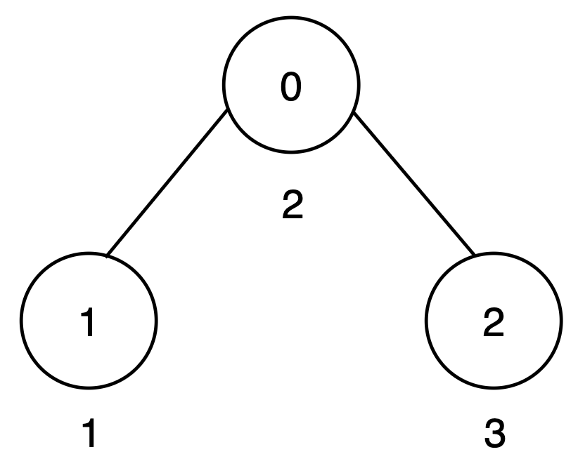
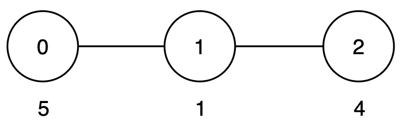
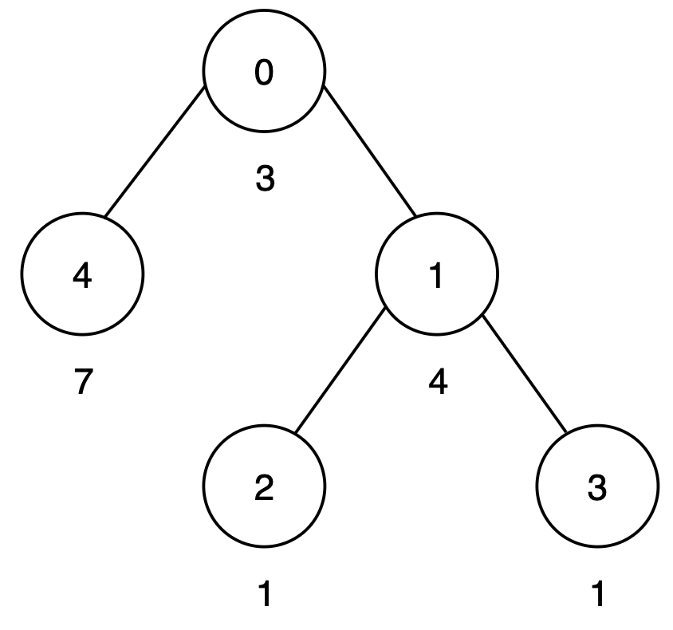

| Category | Difficulty | Likes | Dislikes |
|---|---|---|---|
| Algorithms | Medium | 132 | 10 |
google
You are given an integer n and an undirected tree rooted at node 0 with n nodes numbered from 0 to n - 1. This is represented by a 2D array edges of length n - 1, where edges[i] = [ui, vi] indicates an edge from node ui to vi .
Each node i has an associated cost given by cost[i], representing the cost to traverse that node.
The score of a path is defined as the sum of the costs of all nodes along the path.
Your goal is to make the scores of all root-to-leaf paths equal by increasing the cost of any number of nodes by any non-negative amount.
Return the minimum number of nodes whose cost must be increased to make all root-to-leaf path scores equal.
Example 1:
Input: n = 3, edges = [[0,1],[0,2]], cost = [2,1,3]
Output: 1
Explanation:

There are two root-to-leaf paths:
0 → 1 has a score of 2 + 1 = 3.0 → 2 has a score of 2 + 3 = 5.To make all root-to-leaf path scores equal to 5, increase the cost of node 1 by 2.
Only one node is increased, so the output is 1.
Example 2:
Input: n = 3, edges = [[0,1],[1,2]], cost = [5,1,4]
Output: 0
Explanation:

There is only one root-to-leaf path:
Path 0 → 1 → 2 has a score of 5 + 1 + 4 = 10.
Since only one root-to-leaf path exists, all path costs are trivially equal, and the output is 0.
Example 3:
Input: n = 5, edges = [[0,4],[0,1],[1,2],[1,3]], cost = [3,4,1,1,7]
Output: 1
Explanation:

There are three root-to-leaf paths:
0 → 4 has a score of 3 + 7 = 10.0 → 1 → 2 has a score of 3 + 4 + 1 = 8.0 → 1 → 3 has a score of 3 + 4 + 1 = 8.To make all root-to-leaf path scores equal to 10, increase the cost of node 1 by 2. Thus, the output is 1.
Constraints:
2 <= n <= 105edges.length == n - 1edges[i] == [ui, vi]0 <= ui, vi < ncost.length == n1 <= cost[i] <= 109edges represents a valid tree.